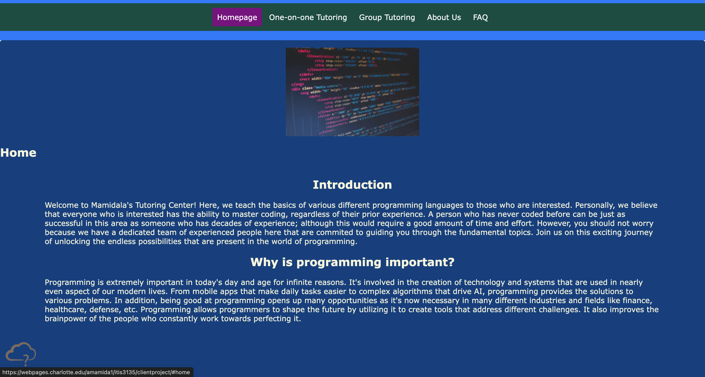

Peer Review #1: Arjun Mamidala
-
Header: Complete
- Go to the home page, at the root of the website, which should be called index: Complete
- The first page should NOT have class material/content on it: Complete
- Within the course website (but not nested further in folders) there should be an index page: Complete
-
Then on this page and all standard pages:
- link element with relative URL to styles/default.css: Complete
- All nav links work and are functional.
- Includes the title of each page the user is on.
-
Main: Complete
- Colors look nice and inviting. Each page has the required information set out and is layed out in a way that is easy to read.
- The yellow text are hard to read against the white so possibly change that to another color like dark blue(this will match with your header color)
- Colorful and vibrant which attracts the user
-
CRAP Principles
- Contrast: Slight contrast issue with the yellow text and white background. Easy fix. Specifically for the first page.
- Repetition: Each page uses the same blue background and white text.
- Alignment: Alignment of elements is proper and centered when needed.
- Proximity: Everything has good proximity to each other making it easy to read and also not crowded.
-
Footer: Complete
- Footer lacks validation buttons for html/css/wcag. However, it does Accumulus Message
- Does not include footer information for the website.
The website header is complete, featuring a home page named index at the root of the website and excluding class material on the initial page. Each course page includes a link to styles/default.css and functional navigation links, with clear titles indicating the current page. While the vibrant colors and layout adhere to design principles, there's a readability issue with yellow text against a white background. Additionally, the footer lacks validation buttons for HTML/CSS/WCAG and does not provide website information, although it includes an Accumulus Message. Overall, the website demonstrates an engaging and cohesive design, with attention to detail evident in its layout and color scheme.